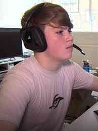

Hvaða tegund af tölvuleik/búnað er um að ræða?
Fortnite er survival, battle royale, sandkassaleikur leikur. Hann virkar þannig að þú ert að keppa við 100 aðra spilara á eyju og sá sem er seinastur eftir lifandi er sigurvegarinn. Fornite er 100% Free To Play sem þýðir að það kostar ekkert að spila hann.

Hvenær var hann búinn til?
Fortnite kom út 21. júlí 2017.
Hverjir eru höfundar og framleiðendur?
Hönnuðurinn var Darren Sugg. Framleiðendurnir eru Epic Games og People Can Fly.

Hverjir eru notendur leiksins/búnaðarins?
Allskonar fólk af öllum aldri og kyni
Hvernig hefur leikurinn/búnaðurinn þróast?
Leikurinn er alltaf að þróast. Það er alltaf nýtt update í hverri viku með einhverju nýju vopni eða hlutum sem þú getur notað. Annars er updateið til þess að laga einhverjar villur í leiknum. Eyjan sem notendur lenda á í byrjun leiks er alltaf að breytast til þess að halda leiknum ferskum og skemmtilegum.
Hverjar eru framtíðarhorfur leiksins eða hvenær var hætt að framleiða leikinn?
Enginn í raun og veru veit hverjar framtíðarhorfur leiksins er á tímanum sem ég skrifa þetta nema að þú sért að vinna fyrir Epic Games eða eitthvað álíka. Hins vegar vitum við að það kemur nýtt season á næsta ári. Oftast er það þannig að það kemur nýtt season á hverjum 10 vikum en núna var seasoninu seinkað um nokkra mánuði. Þegar nýtt season kemur út þá breytist leikurinn yfirleitt gífurlega. Það kemur alltaf nýr Battle Pass með hverju seasoni. Í tölvuleikjaiðnaðinum er Battle Pass tegund af tekjuöflunaraðferð sem veitir viðbótar innihald fyrir leik venjulega í gegnum lagskipt kerfi og verðlaunar leikmanninn með hlutum í leiknum með því að spila leikinn og klára sérstök verkefni. Það átti uppruna sinn í Dota 2 árið 2013, og Battle pass gerðarlíkanið notaði meiri möguleika sem valkostur við áskriftargjöld og loot boxes frá því seint á 10. áratugnum.
Frægir Fortnite Streamers:
Tyler "Ninja" Blevins
TimTheTatMan
Mongraal
Myndband:
Meira um Fortnite:
Fortnite er fjölspilunartölvuleikur. Leikurinn er til í þremur mismunandi leikgerðum sem byggja á sömu leikjavél (e. game engine) og leikmáta (e. gameplay). Þessar leikgerðir eru Fortnite: Save the World sem er samvinnuskotleikur þar sem lið með allt að fjórum spilurum berjast við ófreskjur og verja hluti með því að byggja virki, Fornite Battle Royale sem er ókeypis fjölspilunarleikur þar sem allir eru á móti öllum og berjast til síðasta manns (e. battle royale) og Fortnite Creative þar sem spilarar geta án takmarkana búið til eigin leikheima og bardagavettvanga. Tvær fyrstu leikgerðirnar komu á markað árið 2017 en Creative gerðin í desember 2018. Battle royale-leikurinn varð óhemjuvinsæll og urðu spilarar meira en 125 milljónir á innan við ári.
Mynd: